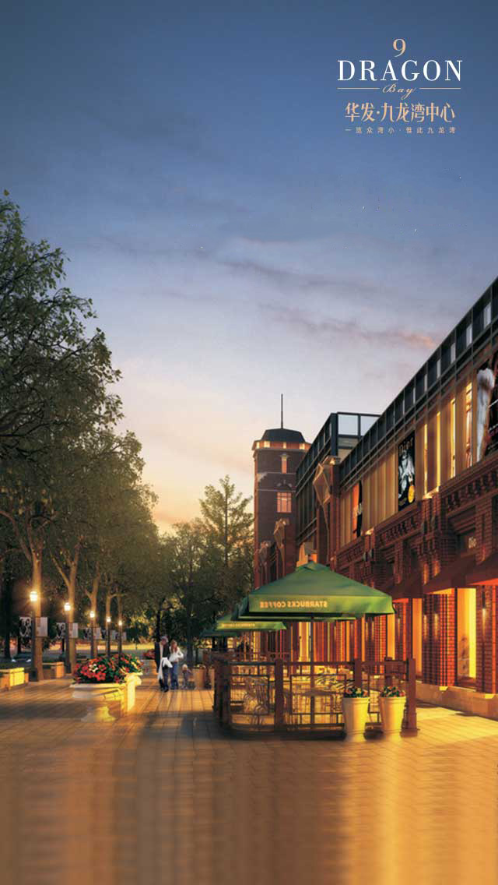
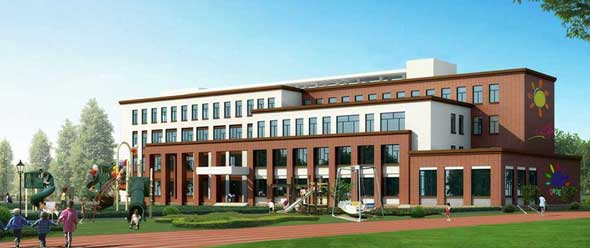
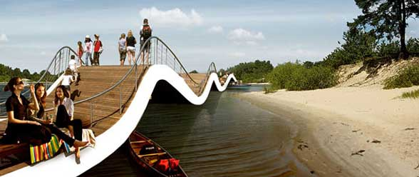
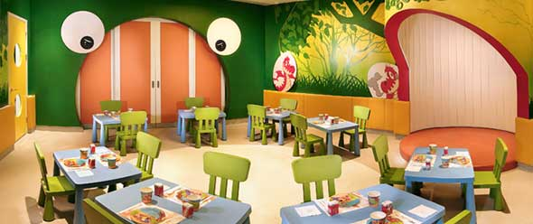
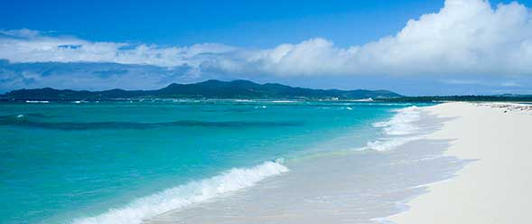

醇熟配套
SUPPORTING FACILITIES学校SCHOOL

片区内规划有10所小学，7所中学，达到1068个教学班，5万学生规模。
目前长郡中学、实验小学已于2012年9月开学，同时师大附中、周南中学、博才小学等名校将于2014年9月开学
公园PARK
九龙湾中心规划有海洋景观的森林公园，公园的设计基于充分尊重自然环境的基础之上，保留沙滩松林原貌，通过稀有树木的全冠移植，丰富森林公园植被种类。
幼儿园KINDERGARTEN
华发•九龙湾中心位于威海市经济技术开发区一线滨海板块，占据威海城市发展重心，项目自身拥有2.6公里海岸线，规划有威海第二海水浴场、两座五星级酒店、体育三馆、5A级写字楼、酒店式公寓、幼儿园、小学。 项目将通过建筑设计、结合景观及各项配套，打造成百万平米大型城市综合体。
体育馆GYMNASIUM

目前国内一般的体育馆仅在场地两端各设一块大屏幕，直播比赛场景。而五棵松体育馆则计划按照NBA的场地标准，不仅保留了场地外侧的电视屏，而且在球场中央的上空设置一个“斗形屏”，其四个侧面各有一块面积约13平方米的大屏幕，播放比赛的同时，还可以播放现场观众和球员们的花絮。
沙滩BEACH
优美的生态环境，打造优美形态的商业主题街区。在立面设计部分，将传统价值植入现代形式，形成商业独特的内在气质和前卫的立面表现。在人行动线上，布置趣味性较强的节点空间，全面提升商业对客群的感染力。